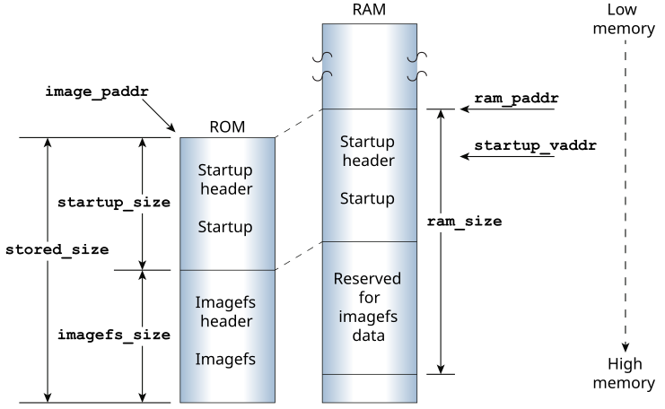
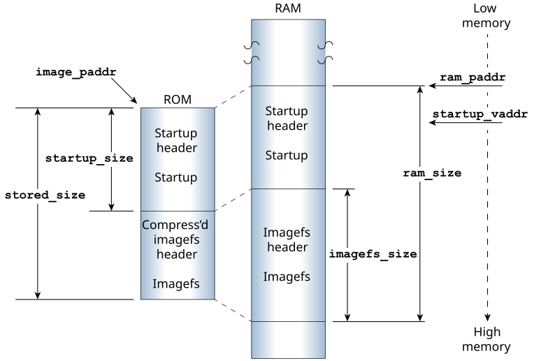
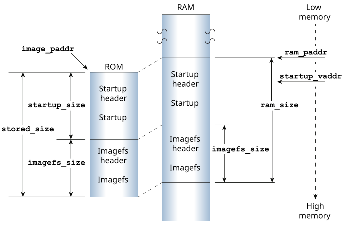
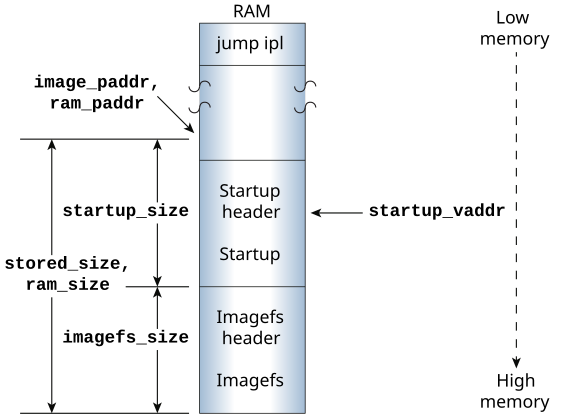
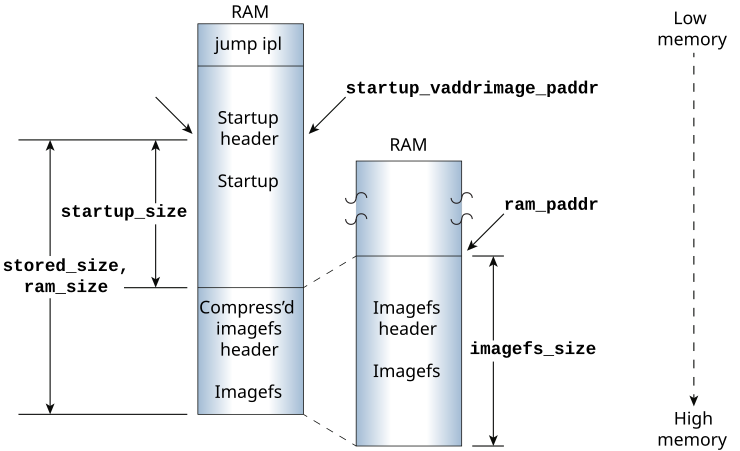

The following diagrams show some common methods for storing bootable images, and what the IPL and startup code copy and extract to RAM in order to prepare the OS to run.
In the pseudo-code examples below, the image_paddr variable stores
the source location of the image in linear ROM, and the ram_paddr
variable stores the image's destination in RAM. For more information about the startup
header and its members, see The startup header
in this
chapter.

checksum (image_paddr, startup_size) checksum (image_paddr + startup_size, stored_size - startup_size) copy (image_paddr, ram_paddr, startup_size) jump (startup_vaddr)

checksum (image_paddr, startup_size) checksum (image_paddr + startup_size, stored_size - startup_size) copy (image_paddr, ram_paddr, startup_size) jump (startup_vaddr)
uncompress (ram_paddr + startup_size, image_paddr + startup_size, stored_size - startup_size)

checksum (image_paddr, startup_size) checksum (image_paddr + startup_size, stored_size - startup_size) copy (image_paddr, ram_paddr, startup_size) jump (startup_vaddr)
copy (ram_paddr + startup_size, image_paddr + startup_size, stored_size - startup_size)
x86 disk boot IPLs). The BIOS or UEFI doesn't know where to jump, so it jumps to its default address, which is the start of the image. We place a small QNX IPL at this location; this IPL simply jumps to the startup code at startup_vaddr:

jump (startup_vaddr)

uncompress (ram_paddr + startup_size, image_paddr + startup_size, stored_size - startup_size)